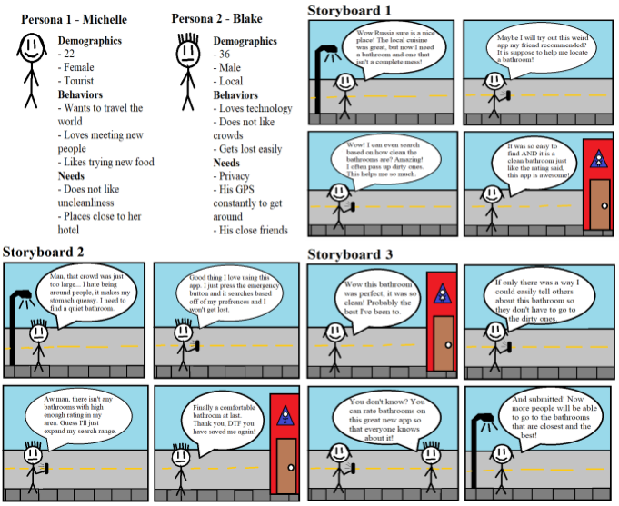
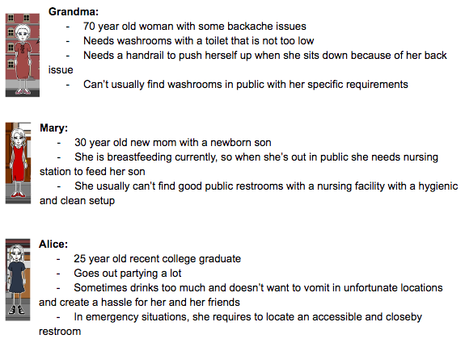
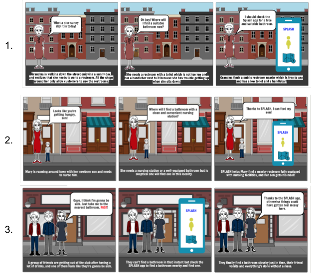
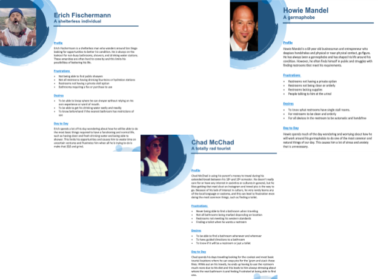
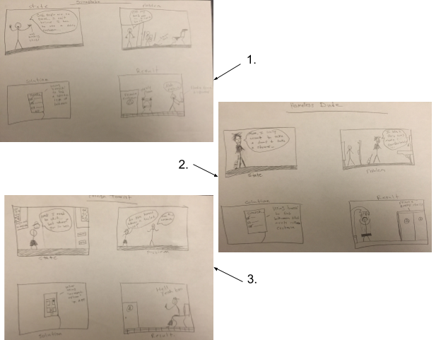
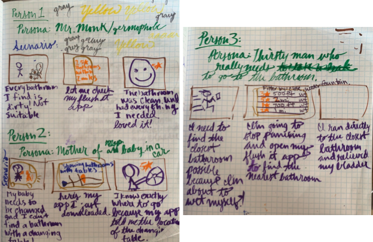
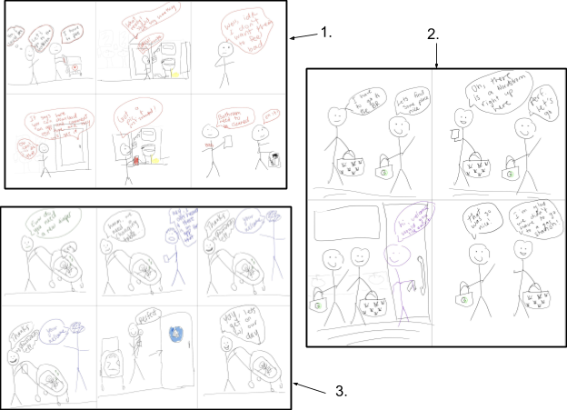
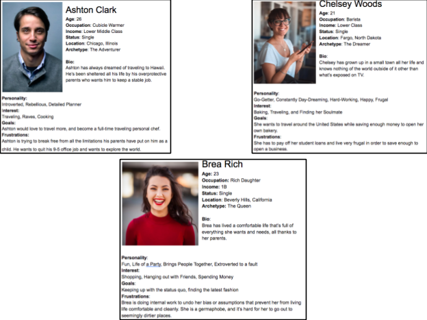

To get a better idea of the target audience of our app, each group member was tasked to create their own storyboards and personas that reflected what our app, Flush It, should do. Before creating our storyboards and personas, it was important to keep in mind the lessons we’ve learned from our assigned readings. We learned that penciling our ideas makes it more versatile and easier to share our visions of the app to our team [1]. However, before penciling our ideas, we all had to learn what should be included in a storyboard. It was important to incorporate a story that develops a beginning, climax, and end, as reflected in each of our storyboards later on [2]. The Narrative Storyboard also suggested different ways to draw out a scene inspired by different camera shots that can help us emphasize actions and motions [2]. Lastly, we were encouraged to create storyboards despite all of our varying artistic skills through the peak shift effect taught in the “The Science of Art” [3]. The peak shift effect is a principle that reflects discrimination learning [3]. As individuals of our group, we all have varying drawing skills and most of us can’t draw realistic human figures. Thankfully, through the peak shift effect we’ve been trained culturally to understand the symbolic representation of stick figures in our drawings. This allows us to quickly create a storyboards for our app without needing to worry about our artistic skills to convey our message. After class, we all went home and worked independently on our personas and storyboards. Here’s a look at what each member did for their personas and storyboard: Stephen Luxford:  Figure 2a. Collage of Stephen’s personas and storyboard. His storyboards show how users can find clean, high rated quiet restrooms, as well as how they can rate and share their favorite restroom.
Prabhav Khandelwal:  Figure 2b. Collage of Prabhav’s personas.  Figure 2c. Collage of Prabhav’s storyboard. His storyboard show how our users can use our app to find amenities for those elderly or disabled, for nursing moms, and for those who need to find the closest restrooms. Austin Sheagley:  Figure 2d. Collage of Austin’s personas featuring Erich (shelterless), Chad (tourist), and Howie (germaphobe).  Figure 2e. Collage of Austin’s storyboard. In order the storyboards are thematic of how users that are germaphobic, shelterless, and how a tourist would use our app for their needs. JP Khaus:  Figure 2f. Collage of JP’s personas and storyboard. His storyboard features users who are germaphobic, mothers, and a thirsty man who finds that our app Flush It gives a solution to their problems. Carolyn Sanford: Figure 2g. Collage of Carolyn’s personas feature John (disabled), Elizabeth (mother), and Paris (Rich).  Figure 2h. Collage of Carolyn’s storyboard. In her storyboards, she features users that are looking for worker’s accountability in cleaning their restrooms, a place where mothers can nurse their children, as well as those who are looking for comfortable and clean restrooms with the help of Flush It Vivian Thai:  Figure 2i. Collage of Vivian’s personas featuring Ashton (tourist), Brea (Rich), and Chelsey (on a budget). During the following class meeting, we all met up and shared our personas and storyboards with each other, quickly before presenting to our class. To sum it up, there were several different types of personas that each of us created. Here’s a list of all the different personas our team came up with: Types of Personas • Germaphobe (looks for closest highly rated bathrooms) • Tourist/Traveler (unfamiliar locations) • Mother (table to change baby) • Disabled (everything is accessible) • Emergency (needs closest bathroom) • Business Owner (provides best bathroom for customers) • Technology Junkie (wants modern/hands-free amenities) • Everyone (curious about their options) After going through each personas and storyboard, we have been able to reflect and sum up our use cases to show that our users feel comforted and relieved in their ability to easily find restrooms of their liking near them. Our users know they can customize their own filters in our app to find the amenities they need (i.e. clean, unisex, technologic, etc.). As a business owner, they would also be able to use our app to leverage their business. One of the greatest features of our app through detailed examination of the storyboards was our filtering system. By default, Flush It will show the nearest restrooms near you. However, our team has also come up with other means to filter which restroom experience you’d enjoy, customizing by: • Star requirement (Our Rating System) • Cost • Changing Table, Breast-feeding room • Technology (i.e. hands free, etc.) • Quiet/Crowded (Popular times of usage) • Nearby Amenities (i.e. water fountain, etc.) • Hygiene Products • Including every other possible amenities that may come with each restroom After our intensive storyboarding and personas creation, our team has a better idea of what we have in mind for Flush It. Next, we’ll share how we’ll try to implement our visions through our lo-fi prototyping process. Thank you for reading and follow Team Splash!